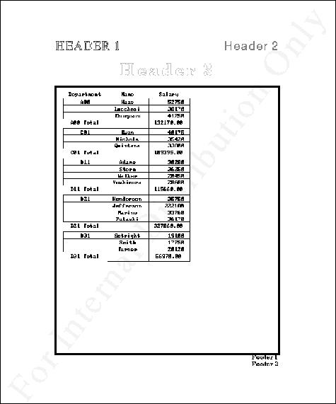

When the print attribute is specified for an object, the part of the object that is currently shown on the screen is reproduced in a PostScript (or Encapsulated PostScript) file. The report display class, on the other hand, allows a table that is too large for the screen or too large for the printer paper to be reproduced in a PostScript (or EPS) file, so that it can be printed in its entirety. It also allows breaks within the table, with computations such as subtotals; banners (such as "Internal Use Only"), headers, footers, boxes, frames, and other decorators; monitoring of the printing progress by program; and so on.Classes That Attributes Apply ToThe value of a variable bound to the report class is the name of a table object, in symbol form. To produce a print file, specify the report attribute for the report object, as in the example below.
Although show accepts the name of a report object without complaint, it ignores the request: reports cannot be shown on the screen. Use Ghostview, Acrobat, or a similar program to preview report output.
Some of the attributes that control the production of reports apply to the report class, some to tables, and some to table columns.To reports:
See the list at the end of this chapter.To tables:
To tableFields:breakfont
breakstyle
columncontrol
columnpagespan
columnspacing
computepagebreakcb
computesizecb
currentbreakcolumn
fixedreportcolumns
framelinewidth
frameoffset
framestyle
headingstyle
leading
newspapercolumn
outputstyle
pagebreakcb
reportfont
reportheadingfont
rowcontrol
rowpagespan
scalefontcb
style
Visual Representationbggrayscale
breakcriteriafunc
breakfont
breakleading
breakoffset
breakon
breakprocessfunc
breakprocesson
breakstyle
breaktext
computationmode
fggrayscale
formatbreakfunc
headingbggrayscale
headingfggrayscale
headingstyle
pagebreakon
reportfont
reportheadingfont
style
suppressduplicate
Set up the table:deptû{(3Ò<"A00"),(3Ò<"C01"),(4Ò<"D11"), (4Ò<"D21"),3Ò<"D31"}; namesû("Haas";"Lucchesi";"Thompson";"Kwan";"Nichols"; "Quintana";"Adams";"Stern";"Walker";"Yoshimura"; "Henderson";"Jefferson";"Marino";"Pulaski"; "Setright";"Smith";"Turner") amtû{52750 38170 41250 40175 35420 33800, 30280 36250 20450 28680 35750 222180, 33760 36170 19100 17750 20120}; `t is `table Ý tû`dept`names`amt; outFunc{s;d;i;p;c;v}:{0Ød} `dept has (`title;"Department"; `out;outFunc); `names has (`title;"Name"; `out;outFunc; `space;9); `amt has (`title;"Salary"); show `tSet up the report:`rep is `report Ý repû`t; func{s;d;i;p;c;v}:{(>dept[0Øi])," Total"} `dept has (`style;`boxl`boxr`boxt`boxb; `breakon;1; `breakstyle;`center`box; `breakprocessfunc;(func;); `suppressduplicate;1); `names has (`style;`boxl`boxr`boxt`boxb); `amt has (`style;`boxl`boxr`boxt`boxb`right; `breakprocesson;1; `computationmode; `sum); `rep has (`margins;1.5; `framestyle;`box; `framelinewidth;5; `orientation;`portrait; `pagenumbering;0; `file;"simpleReport.ps"; `header;(`text; ("HEADER 1";"Header 2";"Header 3"); `fggrayscale;0.25 0.5 0.75; `row;0 0 1; `column;0 2 1; `justify;`left`right`center; `style;(`outline;;`outline); `leading;10; `font; ("Times-Roman-24";"Helvetica-24"; "NewCenturySchlbk-Bold-36")); `footer;(`text;("Footer 1";"Footer 2"); `justify;`right;); `banner;(`text; ("For Internal Distribution Only"); `mode;`diagonal; `font;"Times-Roman-72"; `xorigin;0; `yorigin;0; `fggrayscale;0.95; `justify;`center));Print it to file:`rep has `report;The result as seen in Ghostview is shown in the figure.
A Sample Report, As Seen Through Ghostview:

See the "Display Attributes" chapter for details concerning all the attributes that apply to objects in the report display class, as well as lists of colors and fonts. The key in the Table of All Display Attributes that pertains to this class is Rp.The attributes that are meaningful for the report display class are:
banner (Point the mouse cursor to an attribute to display a short description at the bottom of the screen)
bottommargin
cancel
computepagebreakcb
computesizecb
delimiter
disclaimer
disclaimerbottommargin
disclaimerfile
disclaimerleftmargin
disclaimerrightmargin
disclaimerrulewidth
disclaimertopmargin
disclaimerorientation
filename
footer
footeroffset
framelinewidth
frameoffset
framestyle
header
headeroffset
leftmargin
margins
orientation
outputmode
pagebreakcb
pagecontrol
pagecount
pagecounttotal
pagenumbering
pagenumbers
pagenumbertext
pagesize
rightmargin
scalefont
scalefontcb
state
stateself
topmargin
uniformscaling
| doc@aplusdev.org | © Copyright 1995–2008 Morgan Stanley Dean Witter & Co. All rights reserved. |